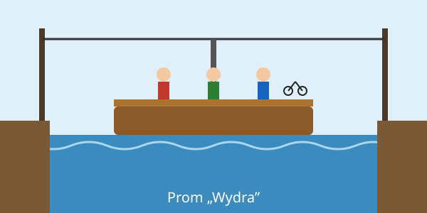

Przeprawa promowa „Wydra”
Przeprawa promowa „Wydra” łączy Brzeg Górny z Kępą Łąkową przez rzekę Mętną. Prom jest ręczny, ciągnięty po linie
rozpiętej nad wodą, a rejs trwa około 6 minut. Na pokład wchodzi 12 osób i 2 rowery. Nie przewozimy samochodów
ani motocykli.
Prom pływa od 1 maja do 30 września. Przy wysokiej wodzie prom stoi. Stan rzeki można sprawdzić w serwisie hydrologicznym IMGW.
Pełny regulamin przeprawy znajduje się na osobnej stronie.

Jak się przeprawić
- Zadzwoń dwa razy dzwonem na słupie przy kładce.
- Poczekaj, aż przewoźnik podpłynie i przycumuje prom.
- Wejdź na trap dopiero wtedy, gdy prom jest przycumowany.
- Rower postaw przy burcie i trzymaj go za kierownicę, a sam usiądź na ławce.
- Zapłać przewoźnikowi na promie, po zajęciu miejsc, przed odbiciem od brzegu.
- Na drugim brzegu wysiądź dopiero na znak przewoźnika.
Czego nie wolno
- Wchodzić na prom z psem bez smyczy.
- Stać przy linie.
- Skakać z promu do wody.
- Wnosić szkła.
- Dzieci do lat 10 nie mogą płynąć bez opieki dorosłego.
Słowniczek pojęć
- Przewoźnik
- Osoba, która prowadzi prom i odpowiada za pasażerów.
- Trap
- Pomost między brzegiem a promem.
- Lina prowadząca
- Stalowa lina nad rzeką, po której prom przesuwa się z brzegu na brzeg.
- Cumowanie
- Przywiązanie promu do brzegu.
- Kępa
- Wyspa albo kawałek lądu, który przy wysokiej wodzie bywa zalewany; od niej wzięła się nazwa wsi.
Przeprawa i miejscowości są fikcyjne.